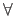

Next: Syntax Up: Grammar Previous: LF-level
Beluga leveraged higher order syntax to support:

x : T)
c_decl ::= ctx_schema_decl (* schema declaration *)
| c_datatype_decl (* inductive datatypes *)
| c_typedef (* type abbreviation *)
| c_rec_prog (* recursive programs *)
| c_let_prog (* non-recursive programs *)
| c_module (* module *)
| exp ";" (* computation-level expression *)
c_typedef ::= typedef id ":" c_kind "=" c_type ";"
c_rec_prog ::= rec id ":" c_type "=" exp {and id ":" c_type "=" exp} ";"
c_let_prog ::= let id [":" c_type] "=" exp ";"
c_module ::= module ID "=" struct sig end ";"
% Schema
ctx_schema_decl ::= schema [some "[" ctx "]"] block
| schema lf_type
hyp ::= id ":" lf_type
| block
% Context
ctx ::= [hyp {"," hyp}]
| id ["," hyp {"," hyp}] (* Context variable *)
ctx_hat ::= [id {"," id}] (* A context with the types erased. *)
c_datatype_decl ::=
datatype id ":" c_kind "=" [ID : c_type] {"|" ID : c_type}
{and id ":" c_kind "=" [ID : c_type] {"|" ID : c_type}} ";"
exp ::= "[" ctx_hat "|-" term "]" (* Contextual object *)
| "[" ctx "|-" term "]" (* Type annotated contextual object *)
| "(" exp "," exp ")" (* Tuple *)
| id (* Variable *)
| ID (* Computation-level constructor *)
| fn id "=>" exp (* Computation-level function *)
| mlam ID "=>" exp (* Dependent type abstraction *)
| mlam id "=>" exp (* Context abstraction *)
| exp exp (* Application *)
| exp "[" ctx "]" (* Context application *)
| case exp of branch {branch} (* Case analysis *)
| case exp of "{" "}" (* Case analysis at uninhabited type *)
| let patt = exp in exp (* Case expression with one branch *)
case_anl ::= case exp of branch {branch} (* Case analysis *)
| case exp of "{" "}" (* Case analysis at uninhabited type *)
branch ::= {quantif} patt "=>" exp
patt ::= "[" ctx_hat "|-" term "]" (* Contextual object *)
| "[" ctx "|-" term "]" (* Type annotated contextual object *)
| "(" patt "," patt ")" (* Tuple *)
| id (* Pattern variable *)
| ID {index_obj} (* Computation-level constructor *)
| patt ":" c_type (* Type annotation in pattern *)
term, lf_type ::= cvar sigma (* contextual variable *)
| id "." int (* k-th projection of a bound variable x *)
| id "." id (* projection with specified name of x *)
| block (* Sigma x:A.B *)
block ::= block id ":" lf_type {"," id ":" lf_type}
cvar ::= id (* context variable *)
| ID (* meta-variable *)
| "#" id (* parameter variable *)
| "#" id "." int (* k-th projection *)
| "#" id "." id (* projection with specified name *)
sigma ::= ^ (* empty substitution *)
| .. (* Identity substitution *)
| sigma term (* substitution sigma , M *)
Note that Beluga restricts context variables to always occur on their own (i.e. sigma is always empty).
In order of precedence, Beluga disambiguates the syntax and imposes restrictions as follows.
Research Group COMPLOGIC 2015-01-27